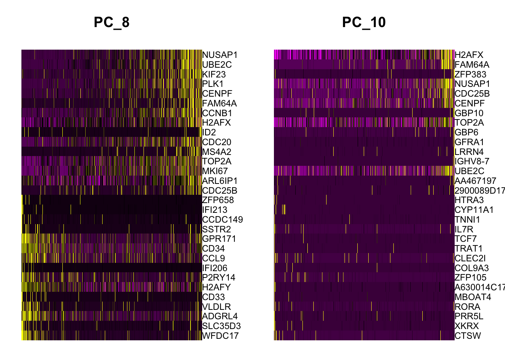
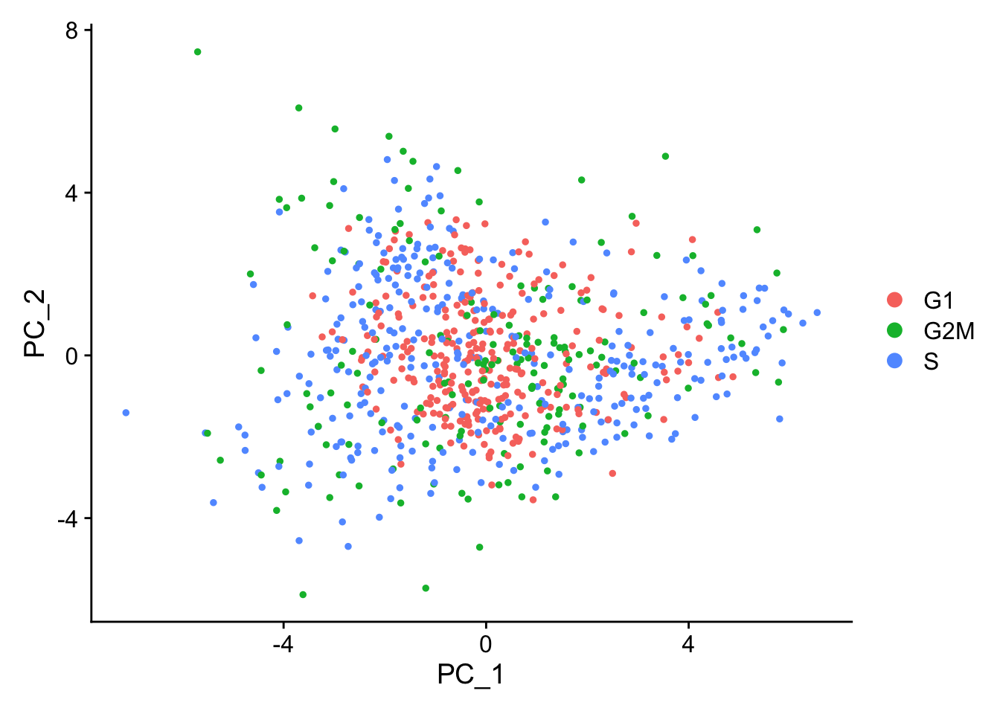

We demonstrate how to mitigate the effects of cell cycle heterogeneity in scRNA-seq data by calculating cell cycle phase scores based on canonical markers, and regressing these out of the data during pre-processing. We demonstrate this on a dataset of murine hematopoietic progenitors (Nestorowa et al. 2016).You can download the files needed to run this vignette here.
11.1 数据读取和预处理
创建Seurat对象
# Read in the expression matrix exp.mat<-read.table(file ="data/seurat_official/cell_cycle_vignette_files/nestorawa_forcellcycle_expressionMatrix.txt", header =TRUE, as.is =TRUE, #保留字符型变量 row.names =1)# Create our Seurat object and complete the initalization stepslibrary(Seurat)marrow<-CreateSeuratObject(counts =Matrix::Matrix(as.matrix(exp.mat), sparse =T))marrow
An object of class Seurat
24193 features across 774 samples within 1 assay
Active assay: RNA (24193 features, 0 variable features)
1 layer present: counts
A list of cell cycle markers, from Tirosh et al, 2015, is loaded with Seurat. We can segregate this list into markers of G2/M phase and markers of S phase
If we run a PCA on our object, using the variable genes we found in FindVariableFeatures() above, we see that while most of the variance can be explained by lineage, PC8 and PC10 are split on cell-cycle genes including TOP2A and MKI67. We will attempt to regress this signal from the data, so that cell-cycle heterogeneity does not contribute to PCA or downstream analysis.
marrow<-RunPCA(marrow, features =VariableFeatures(marrow), ndims.print =6:10, nfeatures.print =10)DimHeatmap(marrow, dims =c(8, 10))

11.2 消除细胞周期的影响
计算细胞周期评分
First, we assign each cell a score, based on its expression of G2/M and S phase markers. These marker sets should be anticorrelated in their expression levels, and cells expressing neither are likely not cycling and in G1 phase.
G0: Quiescence or resting phase. The cell is not actively dividing, which is common for cells that are fully differentiated. Some types of cells enter G0 for long periods of time (many neuronal cells), while other cell types never enter G0 by continuously dividing (epithelial cells).
G1: Gap 1 phase represents the beginning of interphase. During G1 there is growth of the non-chromosomal components of the cells. From this phase, the cell may enter G0 or S phase.
S: Synthesis phase for the replication of the chromosomes (also part of interphase).
G2: Gap 2 phase represents the end of interphase, prior to entering the mitotic phase. During this phase th cell grows in preparation for mitosis and the spindle forms.
M: M phase is the nuclear division of the cell (consisting of prophase, metaphase, anaphase and telophase).
We assign scores in the CellCycleScoring() function, which stores S and G2/M scores in object meta data, along with the predicted classification of each cell in either G2M, S or G1 phase. CellCycleScoring() can also set the identity of the Seurat object to the cell-cycle phase by passing set.ident = TRUE (the original identities are stored as old.ident). Please note that Seurat does not use the discrete classifications (G2M/G1/S) in downstream cell cycle regression. Instead, it uses the quantitative scores for G2M and S phase. However, we provide our predicted classifications in case they are of interest.
We score single cells based on the scoring strategy described in (Tirosh et al. 2016). See ?AddModuleScore() in Seurat for more information, this function can be used to calculate supervised module scores for any gene list.
We now attempt to subtract (‘regress out’) this source of heterogeneity from the data. For users of Seurat v1.4, this was implemented in RegressOut. However, as the results of this procedure are stored in the scaled data slot (therefore overwriting the output of ScaleData()), we now merge this functionality into the ScaleData() function itself.
For each gene, Seurat models the relationship between gene expression and the S and G2M cell cycle scores. The scaled residuals of this model represent a ‘corrected’ expression matrix, that can be used downstream for dimensional reduction.
marrow<-ScaleData(marrow, vars.to.regress =c("S.Score", "G2M.Score"), features =rownames(marrow))
Now, a PCA on the variable genes no longer returns components associated with cell cycle:
When running a PCA on only cell cycle genes, cells no longer separate by cell-cycle phase:
marrow<-RunPCA(marrow, features =c(s.genes, g2m.genes))DimPlot(marrow)

As the best cell cycle markers are extremely well conserved across tissues and species, we have found this procedure to work robustly and reliably on diverse datasets.
11.3 消除细胞周期的影响同时保留增殖细胞与静止细胞的区分
The procedure above removes all signal associated with cell cycle. In some cases, we’ve found that this can negatively impact downstream analysis, particularly in differentiating processes (like murine hematopoiesis), where stem cells are quiescent and differentiated cells are proliferating (or vice versa). In this case, regressing out all cell cycle effects can blur the distinction between stem and progenitor cells as well.
As an alternative, we suggest regressing out the difference between the G2/M and S phase scores. This means that signals separating non-cycling cells and cycling cells will be maintained, but differences in cell cycle phase among proliferating cells (which are often uninteresting), will be regressed out of the data
marrow$CC.Difference<-marrow$S.Score-marrow$G2M.Scoremarrow<-ScaleData(marrow, vars.to.regress ="CC.Difference", features =rownames(marrow))
When running a PCA on cell cycle genes, actively proliferating cells remain distinct from G1 cells however, within actively proliferating cells, G2M and S phase cells group together：
marrow<-RunPCA(marrow, features =c(s.genes, g2m.genes))DimPlot(marrow)
Nestorowa, Sonia, Fiona K. Hamey, Blanca Pijuan Sala, Evangelia Diamanti, Mairi Shepherd, Elisa Laurenti, Nicola K. Wilson, David G. Kent, and Berthold Göttgens. 2016. “A Single-Cell Resolution Map of Mouse Hematopoietic Stem and Progenitor Cell Differentiation.”Blood 128 (8): e20–31. https://doi.org/10.1182/blood-2016-05-716480.
Tirosh, Itay, Benjamin Izar, Sanjay M. Prakadan, Marc H. Wadsworth, Daniel Treacy, John J. Trombetta, Asaf Rotem, et al. 2016. “Dissecting the Multicellular Ecosystem of Metastatic Melanoma by Single-Cell RNA-Seq.”Science 352 (6282): 189–96. https://doi.org/10.1126/science.aad0501.
Source Code
# 消除细胞周期的影响 {#sec-Elimination_of_cell_cycle_effects}> 原文：[*Cell-Cycle Scoring and Regression*](https://satijalab.org/seurat/articles/cell_cycle_vignette)>> 原文发布日期：2023年10月31日We demonstrate how to mitigate the effects of cell cycle heterogeneity in scRNA-seq data by calculating **cell cycle phase scores** based on canonical markers, and regressing these out of the data during pre-processing. We demonstrate this on a dataset of murine hematopoietic progenitors [@nestorowa2016].You can download the files needed to run this vignette [here](https://www.dropbox.com/s/3dby3bjsaf5arrw/cell_cycle_vignette_files.zip?dl=1).## 数据读取和预处理### 创建Seurat对象```{r}# Read in the expression matrix exp.mat <-read.table(file ="data/seurat_official/cell_cycle_vignette_files/nestorawa_forcellcycle_expressionMatrix.txt",header =TRUE, as.is =TRUE, #保留字符型变量row.names =1)# Create our Seurat object and complete the initalization stepslibrary(Seurat)marrow <-CreateSeuratObject(counts = Matrix::Matrix(as.matrix(exp.mat), sparse = T))marrowhead(marrow@meta.data, 5)marrow <-NormalizeData(marrow)marrow <-FindVariableFeatures(marrow, selection.method ="vst")marrow <-ScaleData(marrow, features =rownames(marrow))```### 获取细胞周期marker基因列表A list of cell cycle markers, from Tirosh et al, 2015, is loaded with Seurat. We can segregate this list into markers of G2/M phase and markers of S phase```{r}s.genes <- cc.genes$s.genesg2m.genes <- cc.genes$g2m.genes```### 降维If we run a PCA on our object, using the variable genes we found in `FindVariableFeatures()` above, we see that while most of the variance can be explained by lineage, **PC8 and PC10 are split on cell-cycle genes** including ***TOP2A*** and ***MKI67***. We will attempt to regress this signal from the data, **so that cell-cycle heterogeneity does not contribute to PCA or downstream analysis**.```{r}marrow <-RunPCA(marrow, features =VariableFeatures(marrow), ndims.print =6:10, nfeatures.print =10)DimHeatmap(marrow, dims =c(8, 10))```## 消除细胞周期的影响### 计算细胞周期评分 {#sec-Calculating_cell_cycle_scores}First, we assign each cell a score, **based on its expression of G2/M and S phase markers**. These marker sets should be **anticorrelated** in their expression levels, and **cells expressing neither are likely not cycling and in G1 phase**.::: {.callout-tip collapse="true"}##### [细胞周期](https://zh.wikipedia.org/zh-cn/細胞週期)**细胞周期**（cell cycle），是指能持续分裂的真核细胞从一次有丝分裂结束后，再到下一次分裂结束的循环过程（准确来说只要有DNA复制，不管是不是有丝分裂它都有细胞周期。生殖细胞无细胞周期。)。**细胞周期的划分**总的看来，细胞周期通常可划分为分裂间期（I期）和**分裂期（M期）**，分裂间期是物质准备和积累阶段，分裂期则是细胞增殖的实施过程。整个周期表示为 I期→M期。其中分裂间期（I期）又常常可以划分为**DNA合成前期（G1）**，**DNA合成期（S）**和**DNA合成后期（G2）**。在此期间的任务主要是完成染色质中的DNA复制和相关蛋白质的合成。将I期细分之后，整个细胞周期可以表示为：G1期→S期→G2期→M期。细胞进入G1期可能出现三种情况，其中暂不继续增殖，如骨髓干细胞和处于不利状态下的癌细胞，但在某些刺激下，这些细胞又可以继续生长分裂，因此有人把这种**非增殖状态的G1期细胞称为G0期细胞**。以区别处于增殖状态的G1期细胞。 而分裂期通常分作分裂前期(Prophase)、前中期(Prometaphase)、中期(Metaphase)、后期(Anaphase)和末期(Telophase)5个阶段，在此期间进行细胞物质的平均分配并形成两个新的细胞。{width="266"}- **G0:** Quiescence or resting phase. The cell is not actively dividing, which is common for cells that are fully differentiated. Some types of cells enter G0 for long periods of time (many neuronal cells), while **other cell types never enter G0 by continuously dividing (epithelial cells)**.- **G1:** Gap 1 phase represents the **beginning of interphase**. During G1 there is growth of the non-chromosomal components of the cells. From this phase, the cell may enter G0 or S phase.- **S:** Synthesis phase for the replication of the chromosomes (also part of interphase).- **G2:** Gap 2 phase represents the **end of interphase**, prior to entering the mitotic phase. During this phase th cell grows in preparation for mitosis and the spindle forms.- **M:** M phase is the nuclear division of the cell (consisting of prophase, metaphase, anaphase and telophase).| 状态 | 阶段 | 缩写 | 描述 ||:-------:|:-------:|:-------:|:--------------------------------------------:|| 休息 | G~0~期 | **G~0~** | 细胞离开周期并停止分裂的阶段。 || 间期 | G~1~期 | **G1** | G~1~检查点控制机制确保一切准备好进行DNA合成。 || 合成 | S | **S** | DNA复制发生在这个阶段。 || G~2~期 | G~2~ | **G2** | 在DNA合成和有丝分裂之间的差距期间，细胞将继续增长。 G~2~检查点控制机制确保一切准备好进入M（有丝分裂）阶段并分裂。 || 细胞分裂 | 有丝分裂 | **M** | 细胞生长停止，细胞能量集中在有序地分裂成两个子细胞。有丝分裂中期的检查点（Metaphase Checkpoint）确保细胞可以完成细胞分裂。 |:::We assign scores in the `CellCycleScoring()` function, which stores S and G2/M scores in object meta data, along with the **predicted classification of each cell in either G2M, S or G1 phase**. `CellCycleScoring()` can also set the identity of the Seurat object to the cell-cycle phase by passing `set.ident = TRUE` (the original identities are stored as `old.ident`). Please note that Seurat does not use the discrete classifications (G2M/G1/S) in downstream cell cycle regression. Instead, it uses the **quantitative scores for G2M and S phase**. However, we provide our predicted classifications in case they are of interest.We score single cells based on the scoring strategy described in [@tirosh2016]. See `?AddModuleScore()` in Seurat for more information, this function can be used to calculate supervised module scores for any gene list.```{r}marrow <-CellCycleScoring(marrow, s.features = s.genes, g2m.features = g2m.genes, set.ident =TRUE)table(Idents(marrow))# view cell cycle scores and phase assignmentshead(marrow@meta.data)```#### 可视化细胞周期的影响可视化细胞周期marker的表达分布：```{r}RidgePlot(marrow, features =c("PCNA", "TOP2A", "MCM6", "MKI67"), ncol =2)```以细胞周期marker为计算依据运行PCA：```{r}marrow <-RunPCA(marrow, features =c(s.genes, g2m.genes))DimPlot(marrow)```> The PCA running on cell cycle genes reveals, unsurprisingly, that **cells separate entirely by phase**.这个PCA图也可以用ggplot2的语法进一步修改：```{r}library(ggplot2)DimPlot(marrow) +theme(axis.title =element_text(size =18), legend.text =element_text(size =18)) +guides(colour =guide_legend(override.aes =list(size =10)))```### 回归（regress out）细胞周期评分We now attempt to subtract ('regress out') this source of heterogeneity from the data. For users of Seurat v1.4, this was implemented in `RegressOut`. However, as the results of this procedure are stored in the scaled data slot (therefore overwriting the output of `ScaleData()`), we now merge this functionality into the `ScaleData()` function itself.For each gene, Seurat models the relationship between **gene expression** and the **S and G2M cell cycle scores**. The scaled residuals of this model represent a 'corrected' expression matrix, that can be used downstream for dimensional reduction.```{r}marrow <-ScaleData(marrow, vars.to.regress =c("S.Score", "G2M.Score"), features =rownames(marrow))```Now, a PCA on the variable genes no longer returns components associated with cell cycle:```{r}marrow <-RunPCA(marrow, features =VariableFeatures(marrow), nfeatures.print =10)```When running a PCA on only cell cycle genes, cells no longer separate by cell-cycle phase:```{r}marrow <-RunPCA(marrow, features =c(s.genes, g2m.genes))DimPlot(marrow)```As the best cell cycle markers are extremely well conserved across tissues and species, we have found this procedure to work robustly and reliably on diverse datasets.## 消除细胞周期的影响同时保留增殖细胞与静止细胞的区分The procedure above removes all signal associated with cell cycle. In some cases, we've found that this can negatively impact downstream analysis, particularly in differentiating processes (like **murine hematopoiesis**), where stem cells are quiescent and differentiated cells are proliferating (or vice versa). **In this case, regressing out all cell cycle effects can blur the distinction between stem and progenitor cells as well**.As an alternative, we suggest regressing out the **difference** between the G2/M and S phase scores. This means that signals separating non-cycling cells and cycling cells will be maintained, but differences in cell cycle phase among proliferating cells (which are often uninteresting), will be regressed out of the data```{r}marrow$CC.Difference <- marrow$S.Score - marrow$G2M.Scoremarrow <-ScaleData(marrow, vars.to.regress ="CC.Difference", features =rownames(marrow))```Cell cycle effects strongly mitigated in PCA：```{r}marrow <-RunPCA(marrow, features =VariableFeatures(marrow), nfeatures.print =10)```When running a PCA on cell cycle genes, **actively proliferating cells remain distinct from G1 cells** however, within actively proliferating cells, **G2M and S phase cells group together：**```{r}marrow <-RunPCA(marrow, features =c(s.genes, g2m.genes))DimPlot(marrow)```------------------------------------------------------------------------::: {.callout-note collapse="true" icon="false"}## Session Info```{r}#| echo: falsesessionInfo()```:::